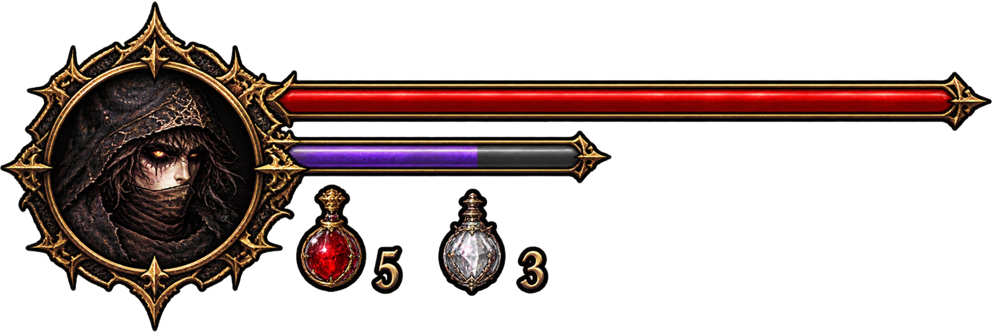

The game is paused.
Before you descend, here's how to fight:
Descend through the bleeding highlands, survive the moonlit cathedral courtyard, then enter the final throne hall and face the cathedral boss.
The first ward falls behind you. A deeper, moonlit courtyard awaits beyond the gate.
The bleeding highlands claim another penitent.